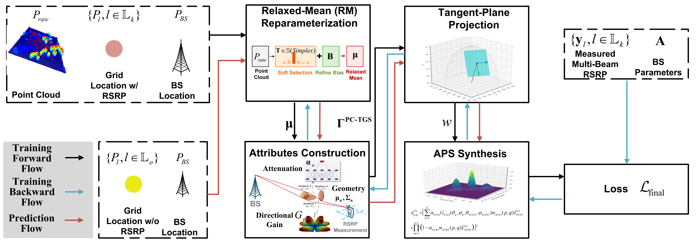
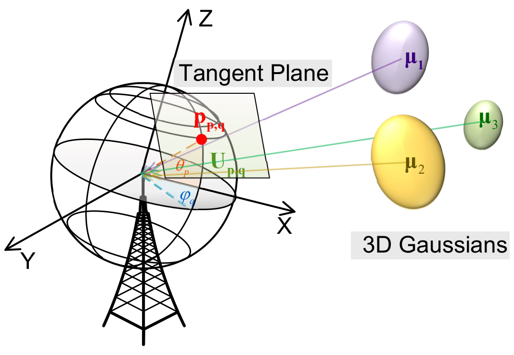
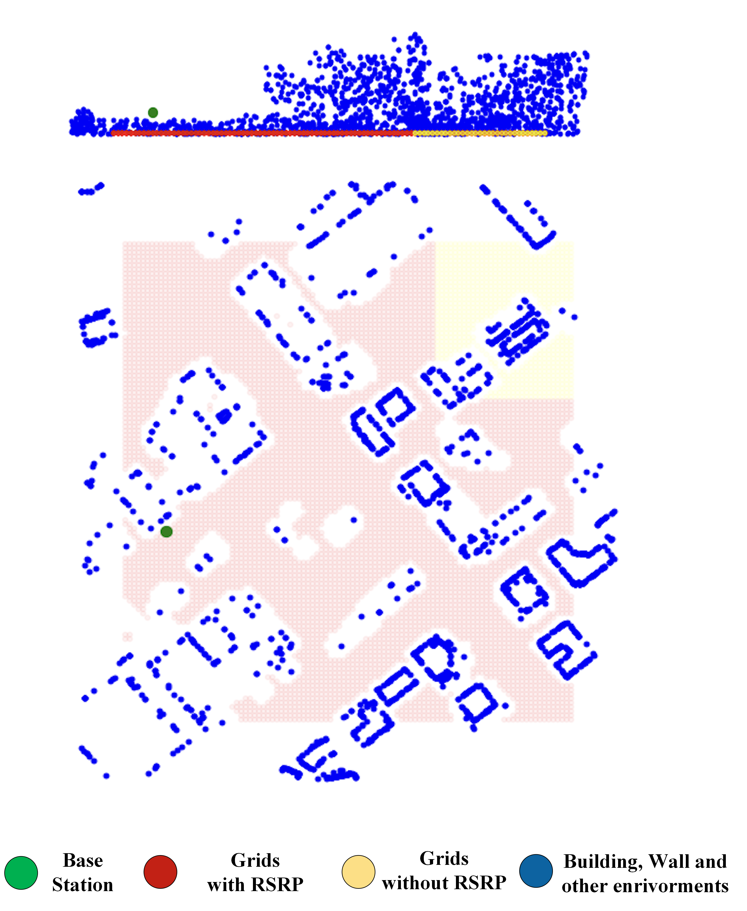

Accurate, site-specific channel information is crucial for optimizing next-generation wireless networks. Localized statistical channel modeling (LSCM) reconstructs the channel multipath angular power spectrum (APS) from RSRP measurements, but cannot predict APS at locations without measurements — a critical gap for large-scale deployment. We present PC-TGS, the first framework to extrapolate APS to unmeasured outdoor grids by integrating sparse radio measurements with dense LiDAR geometry. PC-TGS represents environmental scatterers as anisotropic 3D Gaussians, initialized and refined through a relaxed-mean reparameterization of the raw point cloud. A tangent-plane projection maps each Gaussian into the local angular domain, while a depth-aware electromagnetic splatting process aggregates their contributions. We derive a closed-form Gaussian-weighted average (GWA) for APS bin integration with a provable error bound. Evaluations on a city-scale dataset (5M LiDAR points, 6,310 RSRP samples) demonstrate that PC-TGS significantly outperforms state-of-the-art baselines in both accuracy and inference speed, enabling geometry-aware channel prediction for large-scale wireless digital twins.

PC-TGS consists of four core modules: (1) Relaxed-Mean Reparameterization — soft-selects N virtual scatterers from R raw LiDAR points via a learnable assignment matrix T; (2) Attributes Construction — each scatterer learns anisotropic covariance (scale+rotation), complex spherical harmonic coefficients (degree 0–4) for angle-dependent scattering, and an MLP-predicted attenuation & phase; (3) Tangent-Plane Projection — projects 3D Gaussians onto 2D tangent planes at each angular bin; (4) Electromagnetic Splatting — depth-sorted alpha compositing of complex multipath components, yielding the APS as the squared magnitude of the aggregated field.

Unlike vision-based 3DGS camera projections, PC-TGS projects each 3D Gaussian scatterer onto the tangent plane of the unit sphere at each angular bin (θ, φ). This maps environmental scatterers into the antenna angular domain without camera parameters.

The extracted scatterers (N=2,000) show strong alignment with building facades and corners in the City A point cloud. The relaxed-mean reparameterization successfully anchors each Gaussian to physically meaningful environmental structures.
| Method | Type | ST-1 (dB) ↓ | ST-2 (dB) ↓ | ST-3 (dB) ↓ | Inf. Time (ms) |
|---|---|---|---|---|---|
| PC-TGS (ours) | Offline | 5.57 | 7.45 | 7.57 | 73.6 |
| PC-TGS w/o RFT | Offline | 5.43 | 8.23 | 8.62 | 73.5 |
| MM-LSCM | Offline | 5.76 | 9.12 | 9.94 | 379 |
| SM-LSCM | Offline | 5.89 | 10.02 | 11.14 | 99 |
| RadioUNet | Offline | — | 10.31 | — | 2.1 |
| WNOMP | Online | 6.12 | 13.35 | 15.07 | 1.5 / 8,032 |
| TMSBL | Online | 6.03 | 11.69 | 11.77 | 134 / 9,743 |
| Ray Tracing | Online | — | 14.37 | 16.77 | 8,100 |
ST-1: rotated RSRP @ measured grids | ST-2: RSRP @ unmeasured grids | ST-3: rotated RSRP @ unmeasured grids | MAE in dB (lower is better)
At 50% measurement density, PC-TGS (9.25 dB) still outperforms RadioUNet trained at full density (10.31 dB).
@article{xue2026point,
title={Point-Cloud-Assistant Localized Statistical Channel Prediction
by Tangent Gaussian Splatting},
author={Xue, Ye and Wang, Yiheng and Shao, Xinhua and
Yan, Qi and Zhang, Shutao and Chang, Tsung-Hui},
journal={IEEE Transactions on Wireless Communications},
volume={25},
pages={17816--17830},
year={2026},
publisher={IEEE},
doi={10.1109/TWC.2026.3696997}
}